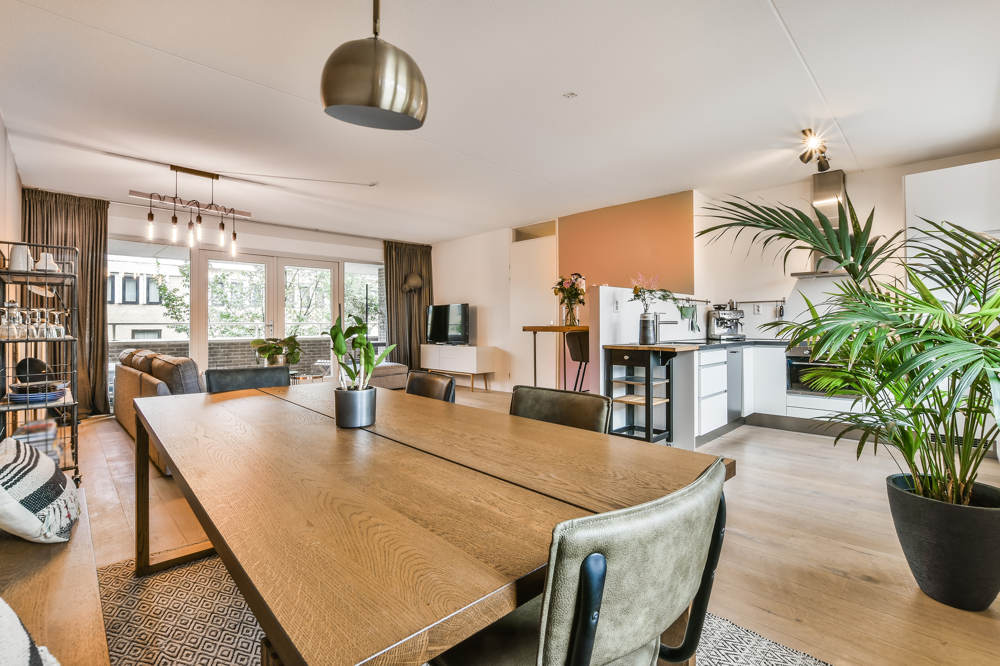
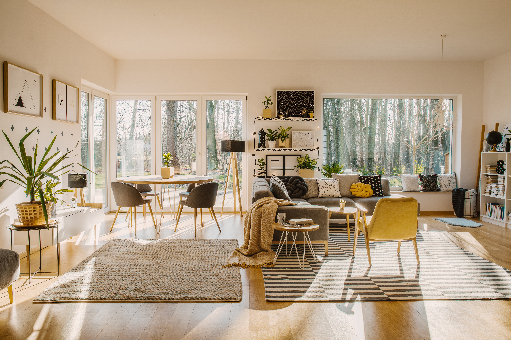
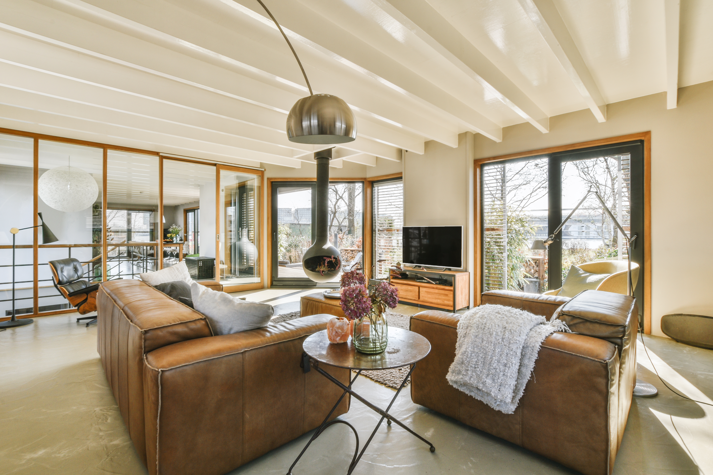
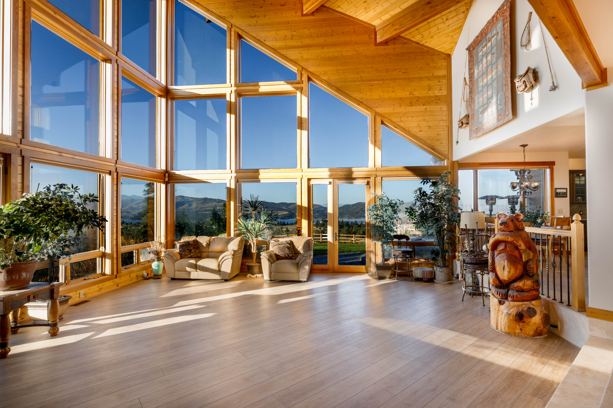
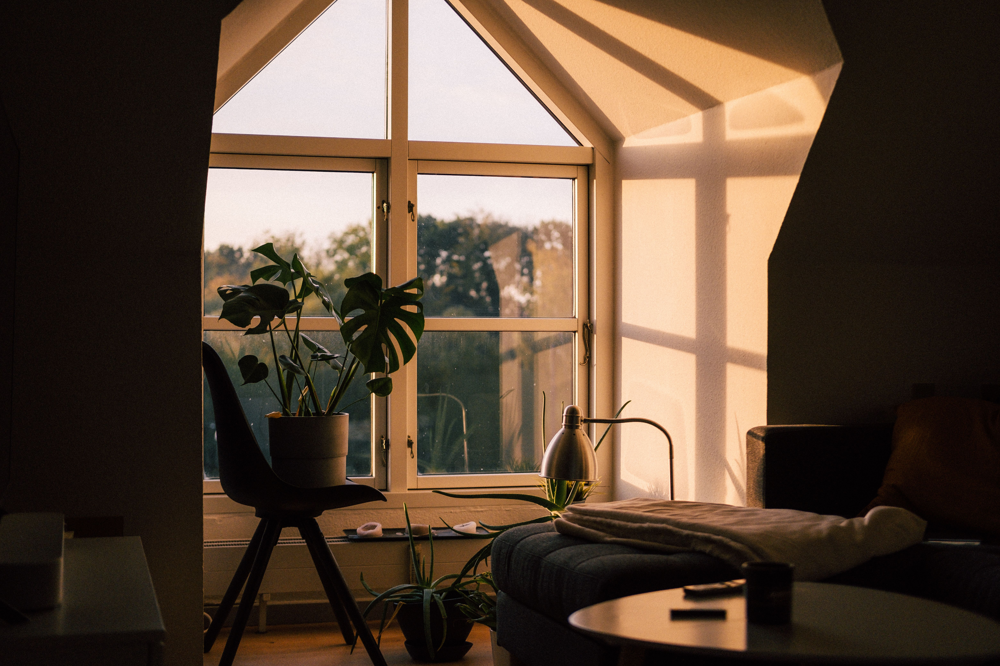
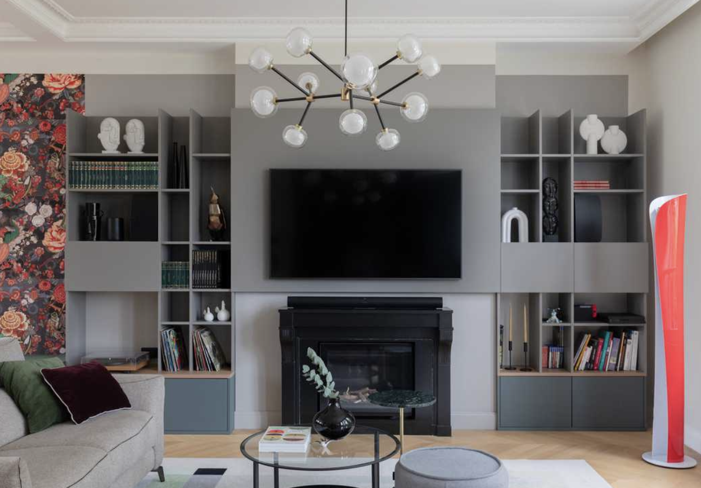
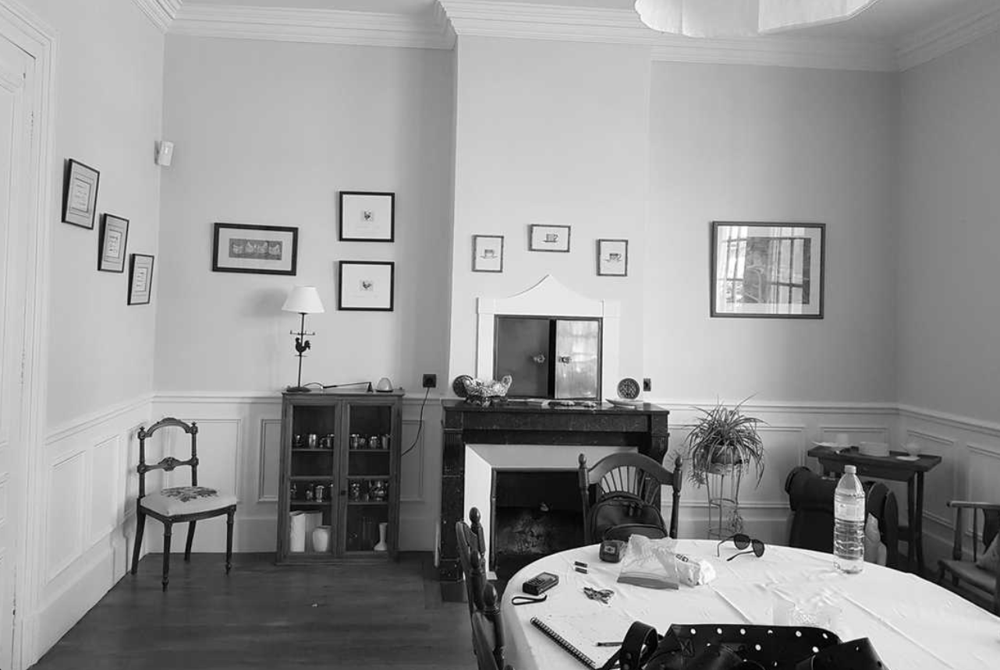

Lille — France
ATELIER NØRD
Architecture intérieure & rénovation
Révéler ce que l’espace peut devenir.
Découvrir l’atelierL’atelier
Transformer un lieu,
sans effacer ce qui le rend unique.
ATELIER NØRD conçoit des intérieurs précis, lumineux et durables. Nous intervenons sur des maisons, des appartements et des espaces à réinventer, avec une attention particulière portée aux usages, aux matières et à la lumière.
- Architecture intérieure
- Rénovation
- Conception d’espaces

Réalisations sélectionnées
Des lieux pensés
pour être habités.



Transformation
Faire entrer la lumière,
clarifier les usages.
Pour MAISON L, les volumes ont été ouverts avec mesure afin de relier les pièces de vie, révéler la lumière existante et redonner une place centrale aux matières naturelles.


Faites glisser le séparateur pour comparer l’état initial et le projet final.
Notre approche
Un projet se construit
d’abord par l’écoute.
-
01
Écouter
Comprendre le lieu, les habitudes, les contraintes et ce qui doit vraiment changer.
-
02
Concevoir
Donner une direction claire aux volumes, à la circulation, à la lumière et aux matières.
-
03
Transformer
Coordonner les interventions avec précision pour faire avancer le projet sans perdre l’intention initiale.
-
04
Habiter
Créer un intérieur durable, simple à vivre et suffisamment singulier pour rester juste dans le temps.
L’atelier en quelques repères
Chiffres de l’atelier
- 32
- espaces transformés
- 14
- années de pratique
- 4
- savoir-faire réunis
- 1
- même exigence
Un projet en tête ?
Parlons de
votre espace.
Une maison à repenser, un appartement à transformer ou un lieu à faire évoluer ? Échangeons autour de votre projet.
bonjour@atelier-nord.example